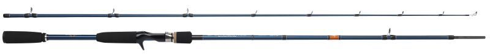

Travel Rods & Specials
Okuma Lure Xtreme 903 (12-42g)

Sakura Sportism Neo 702 (10-40g)
Shakespeare Agility Travel Boat

Reels
Lines
Braid is nearly always the way to go with any form of contact fishing, and it's lack of stretch gives immediate response from any biting fish.Madeira is largely made up of volcanic rock which will happily slice through your line, so strong mono or fluorocarbon leaders are essential, as much as to aid abrasion resistance as to the myriad of fighting fish that could be caught.
Accessories
PFD(Personal Flotation Device)
Not usually the consideration of the shore roving angler, safety should always be considered in extreme location, such as hanging off of volcanic rocks with precipitous depth a few metres in front of you, oh and the strong riptides across bays and upwelling.....ok you get the picture.To date here are some of the items i've found that might be suitable.
-
MTI Calcutta
£56.07

designed to easily adjust to chest sizes ranging from 30 inches to 56 inches utilizing 7 adjustment points.
-
MTI Fisher SE
£39.58

This is the original MTI jacket outfited specifically for fishing, with new features.
-
MTI Solaris
£59.37

All the comfort of the popular Solaris mesh back jacket, plus 'Fishing Specification' outfitting. The new Fishing Bridge is a pocket/rigid platform designed to open and provide a handy work surface, such as tying on lures.
-
NRS Chinook
£72.44

Pockets on pockets, lots of gear attachment points, plus flotation if you swim -- what's not to like about the NRS Chinook Life Jacket?
-
Stohlquist Fisherman
£78.50

The Fisherman provides excellent cockpit management with places for the little things that could end up in your seator overboard. Dual front-mounted tool pouch pockets have protective EVA stiffened outer shells to protect pocket contents, and act as fold down workstations.
-
Crewsaver Teviot Auto
£145.95

Inflation occurs automatically when the capsule is immersed.Capsule fires within 5 seconds of entry into water.Can also be inflated as manual version.
-
Ronny Fisher
£n/a

Utilizes Astral’s proprietary ThinVent™ technology that includes a super thin foam that is evenly distributed in the back and ventilated for maximum comfort in hot weather.
-
Nookie Ranger II
£72.99

Expandable zipped neoprene front & back pockets.Large back pocket (takes hydration system) with extra mesh pocket for flares etc..
-
Palm Hydro Adventure
£71.96

Traditional foam template covers chest and back, YKK front zip entry
-
Waveline 150N
£45.95

Auto and manual lifejacket
-
Typhoon Cyclone 150N
£51.95

Auto and manual lifejacket